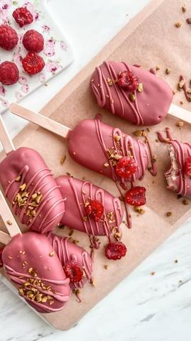

Najkremastiji domaći sladoled

Moja beleška
SačuvanoAuuu.. 🍦🍦🍦 Mislila sam da je prošlogodišnji kinder bueno domaći sladoled teško nadmašiti, ali sam smesi dodala nekoliko sastojaka i dobila preeedivnu strukturu i tako bogat i lep ukus da se samo nadam da vas apsolutno ništa neće sprečiti da ga isprobate 😍😍😍
Sastojci
- Sastojci
- Malina sos
Priprema
Pre pripreme sladoleda spremite malina sloj, kako bi se ohladio. Potrebno je samo iskrčkati maline na malčice vode, šećera i cenjenog limuna. Dovoljno je 10ak minuta na potpuno tihoj vatri. Ovaj deo možete i preskočiti ukoliko imate neki fin dzem koji nije previše gust 🤗 Potom, Umutiti marscapone sir sa slatkom pavlakom i kondenzovanim mlekom, a toj smesi dodati i aromu vanile i istopljene belu čokoladu. Bitno je da se smesa ne premuti već da ostane tečnija. U silikonski kalup redjati malo lomljenog keksa, sladoled smesu, izliti kroz sredinu malina sos , dodati i mrvicu seckanih pistaća. Prevući opet sloj sladoled smese. Najlakše za pripremu biće da koristite dresir kese, a po izlivanju neka odstoji nekoliko sati u frižideru. Kada se dovoljno stegnu i ohlade umačete ih u otopljenu ruby čokoladu. Od ove smese sam pripremila 8 sladoleda na štapićima i od ostatka smese činiju za sladoled koji ću služiti u čaši. Silikonske kalupe, kao i dresir kese možete pronaći kod @svet.poslasticara Callebaut ruby čokoladu u @curcuma__shop -u 🫶🏼
Originalni opis sa Instagrama
Najkremastiji domaći sladoled 🍦🤍 Auuu.. 🍦🍦🍦 Mislila sam da je prošlogodišnji kinder bueno domaći sladoled teško nadmašiti, ali sam smesi dodala nekoliko sastojaka i dobila preeedivnu strukturu i tako bogat i lep ukus da se samo nadam da vas apsolutno ništa neće sprečiti da ga isprobate 😍😍😍 Sastojci: •250 gr marscapone sira •300 gr zasladjenog kondenzovanog mleka •300 ml slatke pavlake •kašičica arome vanile •100 gr topljene bele cokolade •200 gr ruby cokolade •dodatno malo mrvljenog keksa i seckanih pistaća po ukusu Malina sos: •150gr zaledjenih malina •kasika vode •vanilin šećer •kašičica cenjenog limuna Pre pripreme sladoleda spremite malina sloj, kako bi se ohladio. Potrebno je samo iskrčkati maline na malčice vode, šećera i cenjenog limuna. Dovoljno je 10ak minuta na potpuno tihoj vatri. Ovaj deo možete i preskočiti ukoliko imate neki fin dzem koji nije previše gust 🤗 Potom, Umutiti marscapone sir sa slatkom pavlakom i kondenzovanim mlekom, a toj smesi dodati i aromu vanile i istopljene belu čokoladu. Bitno je da se smesa ne premuti već da ostane tečnija. U silikonski kalup redjati malo lomljenog keksa, sladoled smesu, izliti kroz sredinu malina sos , dodati i mrvicu seckanih pistaća. Prevući opet sloj sladoled smese. Najlakše za pripremu biće da koristite dresir kese, a po izlivanju neka odstoji nekoliko sati u frižideru. Kada se dovoljno stegnu i ohlade umačete ih u otopljenu ruby čokoladu. Od ove smese sam pripremila 8 sladoleda na štapićima i od ostatka smese činiju za sladoled koji ću služiti u čaši. Silikonske kalupe, kao i dresir kese možete pronaći kod @svet.poslasticara Callebaut ruby čokoladu u @curcuma__shop -u 🫶🏼 • • • #domacisladoled #sladoled #kuglasladoleda #sladolednastapicu #rubycokolada #malinapistac #recepti #slatkisi #slatkirecepti #brzoilako #cheesecakeicecream #homemadeicecream #callebautrubychocolate